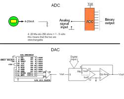
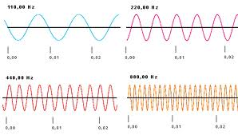

2. Digitalización del Sonido
Puesto que el sonido se transmite por ondas analógicas, el ordenador no es capaz de trabajar con él. Ese es el motivo por el que un ordenador ha de convertir la señal analógica de los sonidos en señal digital, proceso que se denomina digitalización del sonido. Este proceso se repite en sentido contrario cuando es el ordenador el que ha de generar los sonidos para que se oigan mediante unos altavoces.
El dispositivo digitalizador (la tarjeta de sonido del PC) muestrea la señal analógica que recibe, una gran cantidad de veces por segundo. La palabra muestreo es equivalente al término inglés sampling, y se utiliza para indicar la acción de tomar muestras a intervalos de tiempo regulares. O sea que la digitalización en este caso consiste en escuchar el sonido de un instante muy breve (muestra), un número muy elevado de veces por segundo, y almacenar una secuencia de dígitos binarios para cada muestra.

Para medir la calidad del muestreo, debemos referirnos a dos parámetros: la frecuencia de muestreo y la resolución.

Este artículo está licenciado bajo Creative Commons Attribution-NonCommercial-ShareAlike 2.5 License
Jo.R.C.A. 2004 - 2011

Edición de Audio y Video con Software Libre by José Ramón Cerdeira Alonso is licensed under a Creative Commons Reconocimiento-No comercial-Compartir bajo la misma licencia 3.0 España License